Кейс · Mobile · Social + Web3
Tietly: соцсеть и крипто-кошелёк в одном приложении
Мобильная платформа, где можно знакомиться на событиях, общаться и управлять цифровыми активами. Спроектировал продукт от идеи до более чем 100 экранов.
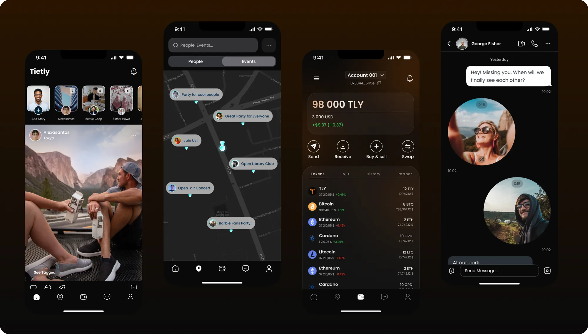
- Роль
- Продуктовый дизайнер
- Тип
- Стартап, мобильное приложение
- Платформа
- iOS
- Срок
- 4 месяца
- Мой вклад
- Продуктовая логика, UX, UI, дизайн-система, прототипы, материалы для питча
Коротко о кейсе
Tietly - платформа, которая соединяет социальное взаимодействие и блокчейн. Пользователь знакомится и ходит на события, общается в чатах и группах, а в том же приложении покупает, продаёт и обменивает криптовалюту и управляет NFT. Задача дизайна: сделать два мира одним понятным продуктом.
01 · Видение
Будущее соцсетей
Tietly - инновационная платформа, объединяющая социальное взаимодействие и технологии блокчейна.
01 · Общаться
Личные и групповые чаты, голосовые и видеосообщения, звонки. Закрытые сообщества с доступом по токенам.
02 · Делиться контентом
Фото, видео, истории и события. Интерактивная карта показывает, где что происходит и кто рядом.
03 · Управлять активами
Покупка, продажа и обмен криптовалюты, хранение NFT и заработок внутри платформы токенами Tietly.
02 · Проблема и инсайт
Социальная изоляция в новом городе
Переезд в новый город всегда вызов: трудно находить интересные события и людей для общения.
Проблема
Люди, которые переехали или расширяют круг общения, не видят, что происходит рядом: события разбросаны по разным сервисам, а соцсети показывают чужой контент, а не живые встречи.
Инсайт
Знакомства случаются вокруг событий, а не вокруг бесконечной ленты. Нужна точка входа «что происходит рядом со мной сейчас».
Решение
Интерактивная карта событий и людей: от вечеринок до культурных мероприятий. Она усиливает социальную жизнь и создаёт возможности для знакомств.
03 · Конкурентный анализ
Instagram, Snapchat и Telegram: где место Tietly
Каждый из конкурентов сильнее в одном: контенте, камере или переписке. Tietly добавляет то, чего у них нет: финансовую экосистему.
Сила в контенте. Tietly - это не только контент, но и финансовые возможности через криптовалюты и NFT.
Snapchat
Сила в AR и камере. Tietly тоже использует AR, но добавляет ценность через управление цифровыми активами.
Telegram
Сила в общении. В отличие от Telegram, Tietly - не только коммуникация, но и экосистема для финансовых операций: заработок через токены и NFT.
Tietly
Общение, контент и финансы в одном приложении, плюс события и карта как повод для знакомств.
04 · Продуктовая стратегия
Три опоры продукта
Каждая опора отвечает на свою потребность и усиливает остальные.
Знакомства и события
- Геолокация и карта пользователей
- Поиск людей по общим интересам
- События: создание, вступление, приглашения
- Интерактивные посты и истории
Общение
- Голосовые и видеозвонки
- Личные и групповые чаты
- Голосовые и видеосообщения, медиафайлы
- Группы с токенизированным доступом
Кошелёк и NFT
- Покупка, продажа и обмен криптовалют
- Хранение и управление NFT
- История операций, отправка и получение
- Заработок: приглашения, платные события, активность
Принципы дизайна
Одно приложение вместо двух
Кошелёк - полноценный раздел навигации
Приватность под контролем пользователя
Тёмный интерфейс и один акцентный цвет
05 · Сквозной путь
От регистрации до первой транзакции
Шесть шагов, которые связывают социальную и финансовую части приложения.
Регистрация
Пять коротких шагов, профиль с фото и био
Лента и истории
Знакомство с контентом и людьми
Карта событий
Что происходит рядом прямо сейчас
Событие
Вступить, создать или пригласить друзей
Чат
Договориться, отправить голос или видео
Кошелёк
Токены, NFT, покупка, обмен, перевод
06 · Ключевое решение 1 / 8
Регистрация за пять коротких шагов
ЗАДАЧА
Регистрация в соцсети с кошельком не должна быть сложнее, чем в обычной соцсети. Данных нужно ровно столько, чтобы собрать профиль для знакомств.
РЕШЕНИЕ
Пять шагов: способ входа, имя и никнейм, пароль, фото и био. Один экран - одна задача, главное действие всегда внизу.
ДЕТАЛИ
Если никнейм занят, система сразу предлагает свободные варианты. Фото и описание необязательны, но экран объясняет, зачем они нужны для знакомств.
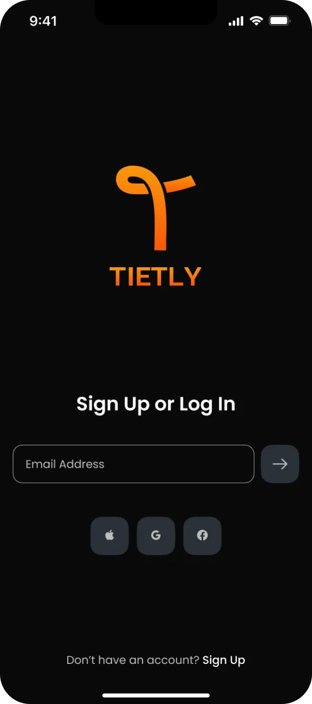
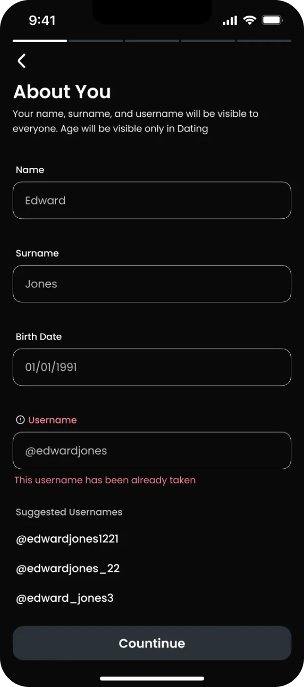
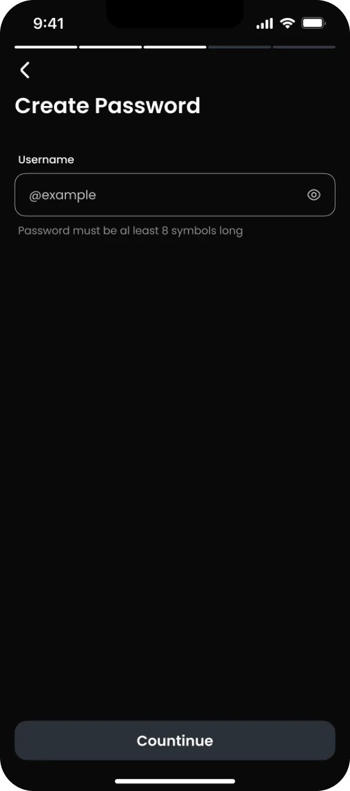
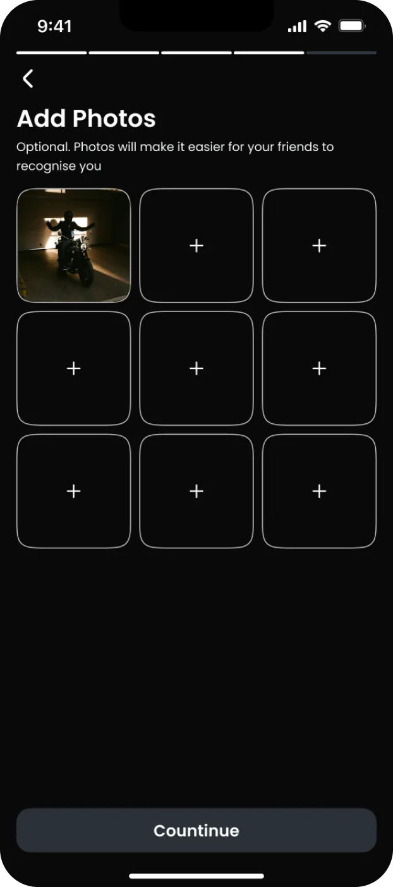
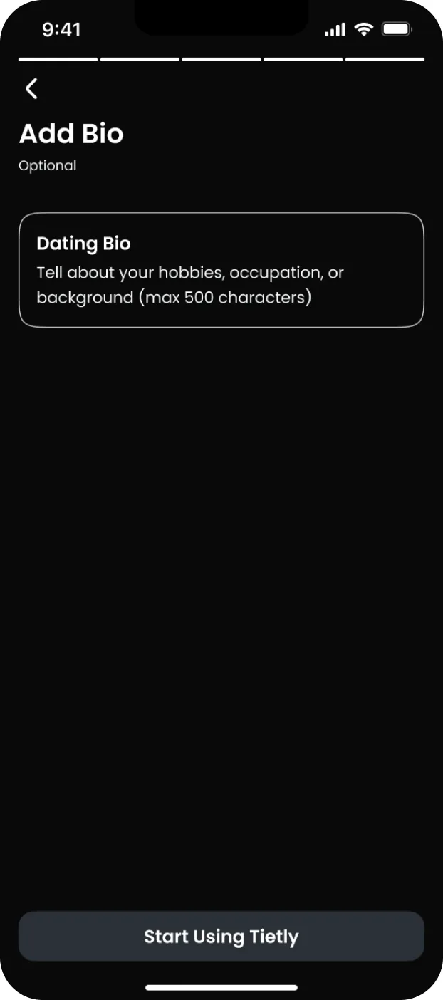
Ключевые действия
- Разбил регистрацию на шаги, чтобы снизить нагрузку на каждом экране
- Заложил состояния ошибок и подсказки, а не только «счастливый путь»
- Сделал био в формате для знакомств: хобби, род занятий, до 500 символов
07 · Ключевое решение 2 / 8
Лента, истории и профиль
ЗАДАЧА
Показать живое присутствие людей: кто рядом, что публикуют и куда идут.
РЕШЕНИЕ
Истории сверху, крупные посты с подписью и местом, профиль со счётчиками и вкладками: публикации, места, отметки. Отдельная вкладка событий показывает даты и число участников.
ДЕТАЛИ
Истории открываются на весь экран с быстрым ответом сообщением. Нижняя навигация из пяти разделов: лента, карта, кошелёк, чаты, профиль.
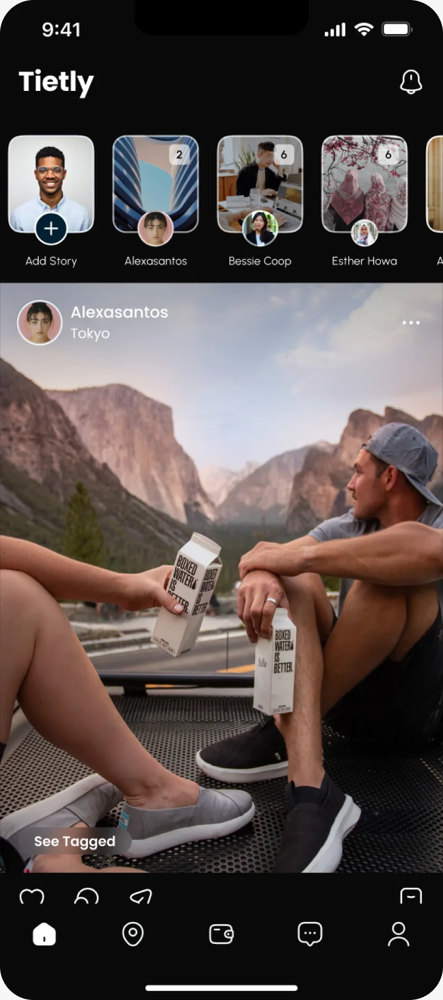
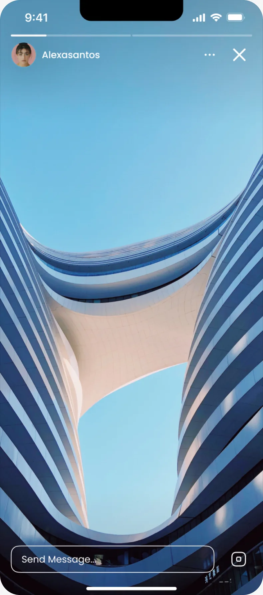
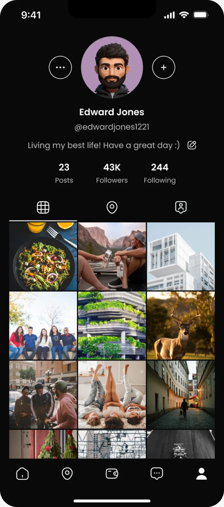
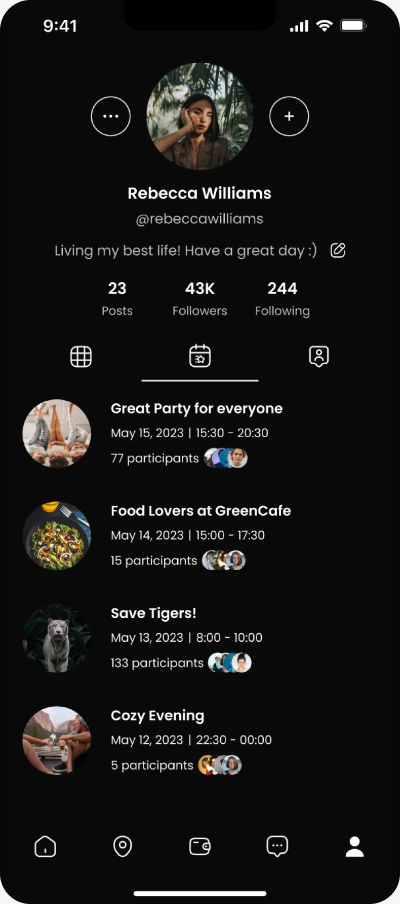
Ключевые действия
- Вынес события в профиль: это готовый повод для знакомства
- Сделал ответ на историю прямо из просмотра, без перехода в чат
- Поставил кошелёк в нижнюю навигацию наравне с лентой и чатами
08 · Ключевое решение 3 / 8
Карта событий и людей: главное отличие продукта
ЗАДАЧА
Дать ответ на вопрос «что происходит рядом» и превратить карту в главный инструмент знакомств.
РЕШЕНИЕ
Карта с переключателем «Люди / События», метками событий и аватарами людей. Фильтры по бесплатным событиям и тем, где я участвую, поиск и недавние запросы.
ПРИВАТНОСТЬ
Пользователь сам решает, видят ли его на карте: в меню есть пункт «Не показывать меня на карте».
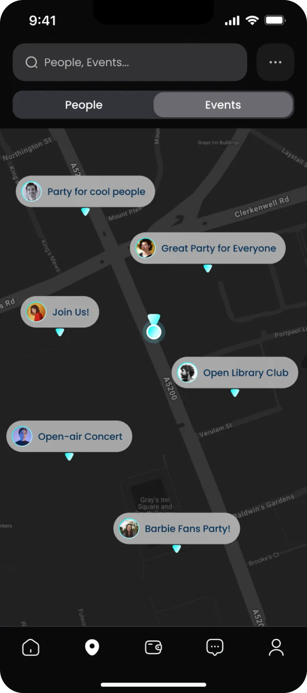
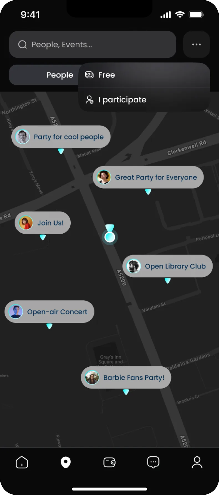
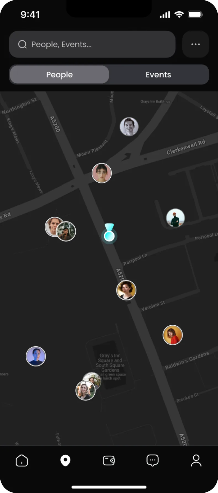
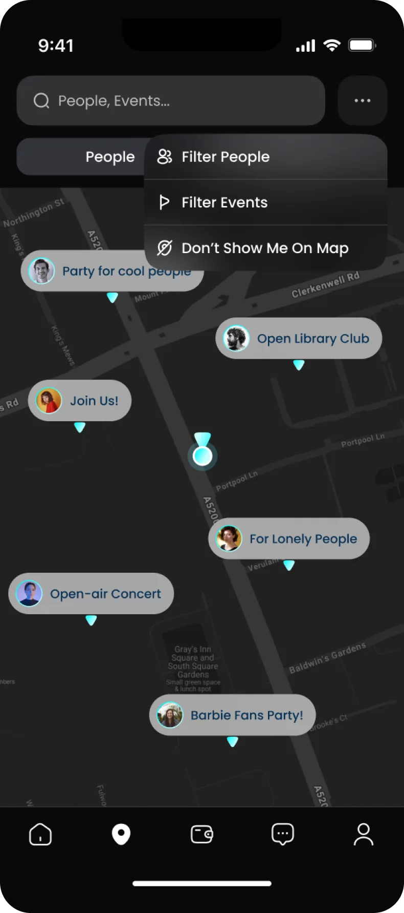
Ключевые действия
- Сделал карту полноценным разделом навигации, а не вкладкой внутри ленты
- Заложил приватность в основное меню, а не в глубину настроек
- Разделил поиск людей и событий одним переключателем
09 · Ключевое решение 4 / 8
События: от «куда пойти» до участия за пару касаний
ЗАДАЧА
Дать участнику быстрый путь к событию, а организатору простой инструмент без лишних полей.
РЕШЕНИЕ
Страница события: обложка, дата и время, число участников, описание, карта с расстоянием и кнопка «Присоединиться». Состояния: вступить, запросить доступ, вы уже участвуете.
ДЛЯ ОРГАНИЗАТОРА
Создание: название, описание, время начала и конца, календарь, приглашение друзей. Для автора есть меню «Изменить» и «Удалить».
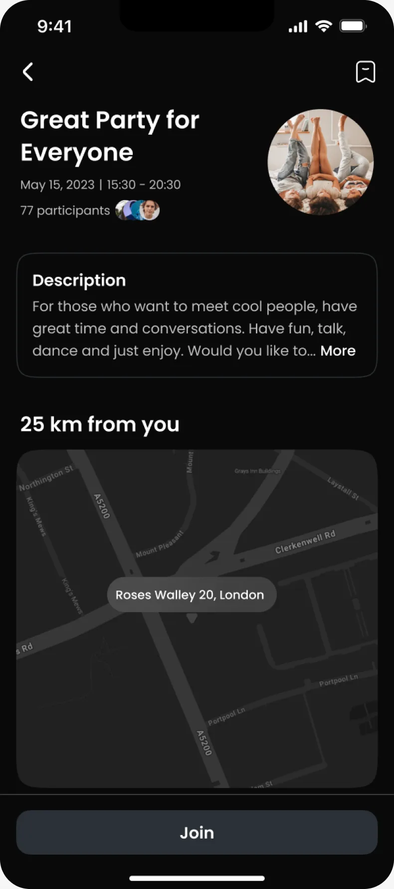
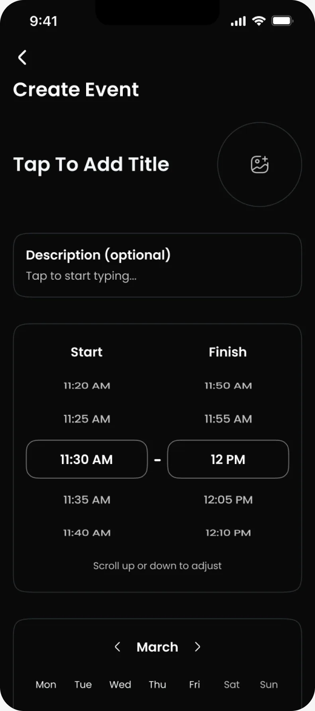
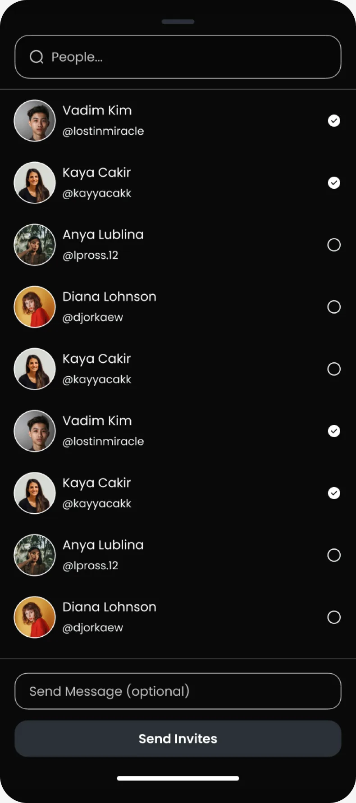
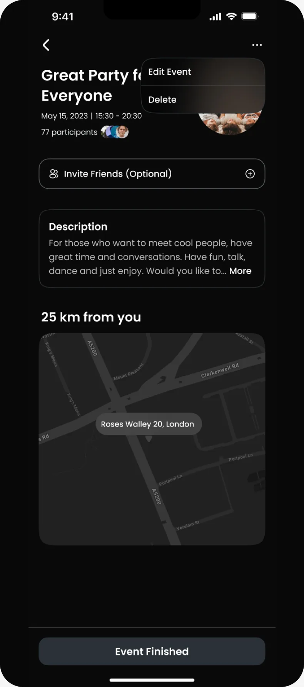
Ключевые действия
- Сделал выбор времени колесом, как в системных календарях, чтобы не учить новому
- Описал разные состояния кнопки: открытое, по запросу, уже вступил
- Дал приглашение друзей прямо из события
10 · Ключевое решение 5 / 8
Чаты: привычный мессенджер с живыми форматами
ЗАДАЧА
Дать общаться так, как привыкли в мессенджерах, и добавить форматы, которые сближают.
РЕШЕНИЕ
Список чатов с блоком «Совпадения» и вкладками «Личные / Группы», действия свайпом. Видеосообщения в круге, голосовые с записью свайпом, групповые чаты.
ДЕТАЛИ
При записи голоса подсказка «Свайп влево - отмена, отпустите - отправить»; запись можно закрепить, чтобы не держать палец.
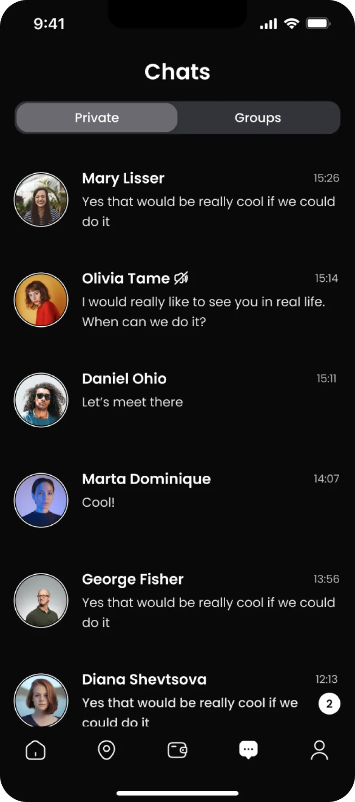
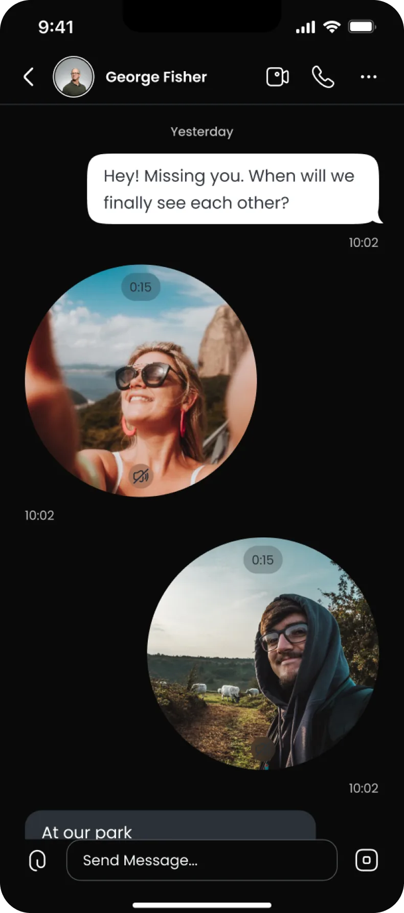
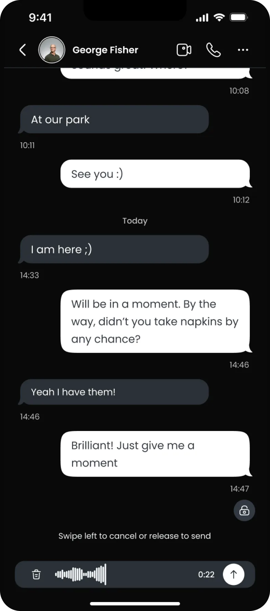
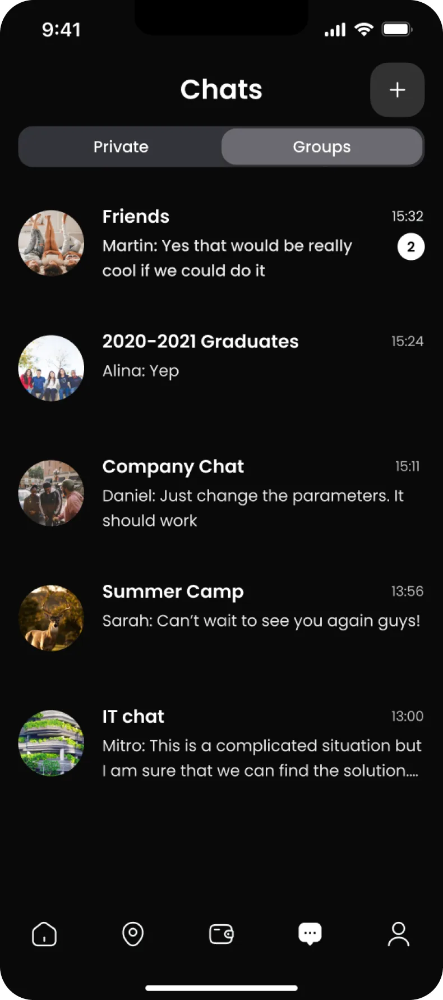
Ключевые действия
- Оставил привычные паттерны: списки, пузыри, свайпы
- Добавил «Совпадения» как мост между знакомством и перепиской
- Сделал запись голоса и видео управляемой одним жестом
11 · Ключевое решение 6 / 8
Кошелёк: понятный новичку и достаточный профи
ЗАДАЧА
Дать простой кошелёк тем, кто не разбирается в крипте, и не потерять опытных пользователей.
РЕШЕНИЕ
Баланс в токенах и долларах с изменением за период, четыре главных действия (отправить, получить, купить и продать, обменять) и вкладки: токены, NFT, история, партнёрка.
ДЕТАЛИ
История с фильтрами по датам и поиском по адресу или хэшу. Раздел «Партнёр» показывает уровни, прибыль и реферальную ссылку.
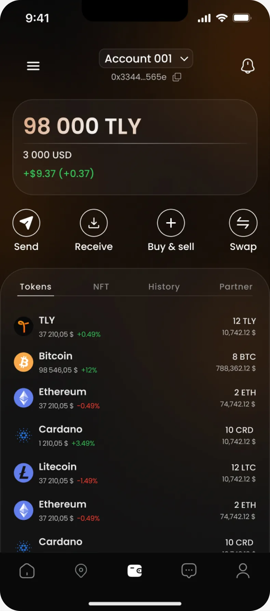
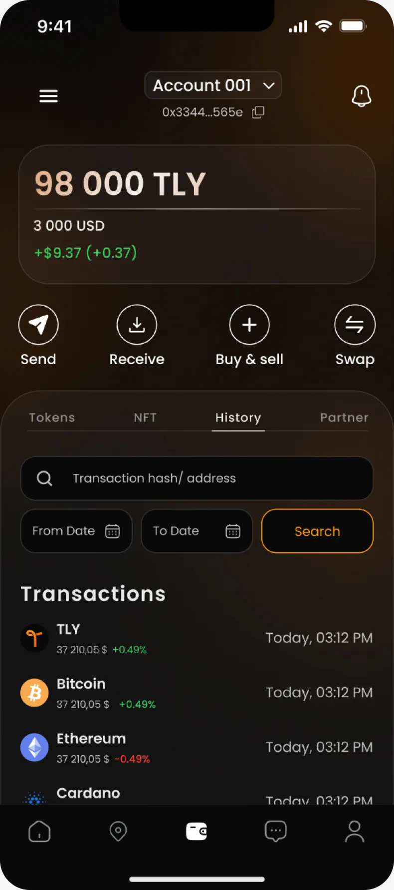
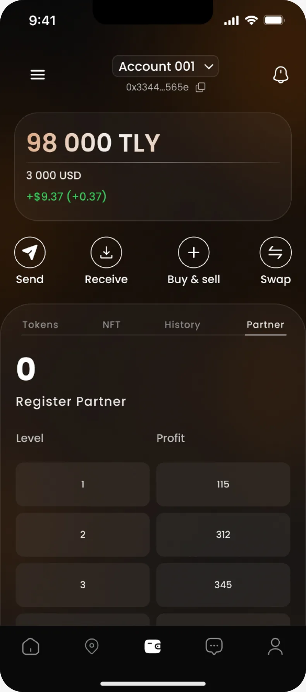
Визуальный приём
Социальная часть чёрная, а кошелёк выполнен в тёплом коричнево-оранжевом градиенте. Пользователь всегда понимает, где он: в общении или с деньгами.
Ключевые действия
- Вынес четыре главные операции под баланс: они нужны чаще всего
- Показал деньги в двух единицах: токены и доллары
- Собрал токены, NFT, историю и партнёрку в одном разделе
12 · Ключевое решение 7 / 8
NFT: коллекция вместо таблицы адресов
ЗАДАЧА
Показать NFT как коллекцию, которой можно управлять и гордиться, а не как технический список.
РЕШЕНИЕ
Сетка карточек с картинкой, названием, ценой и действием. Детальная карточка: описание, создатель, владелец, блокчейн, количество. Покупка с выбором способа оплаты.
ДЕТАЛИ
NFT лежат в том же кошельке, что и токены: управлять ими можно из одного места, без отдельных сервисов.
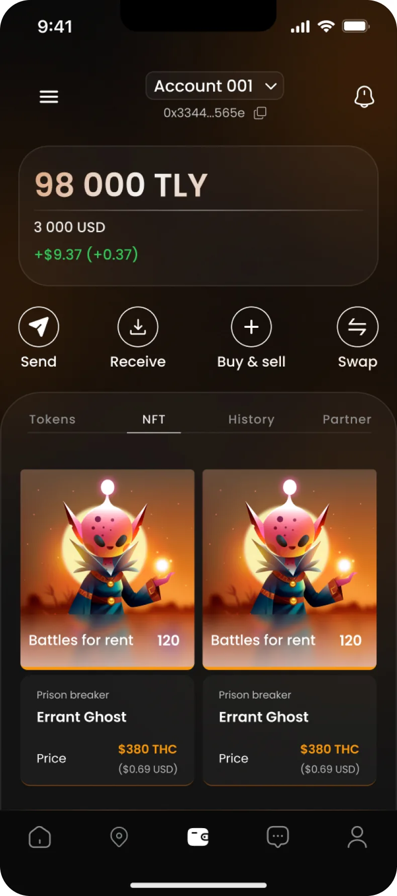
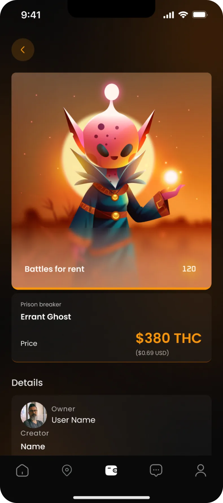
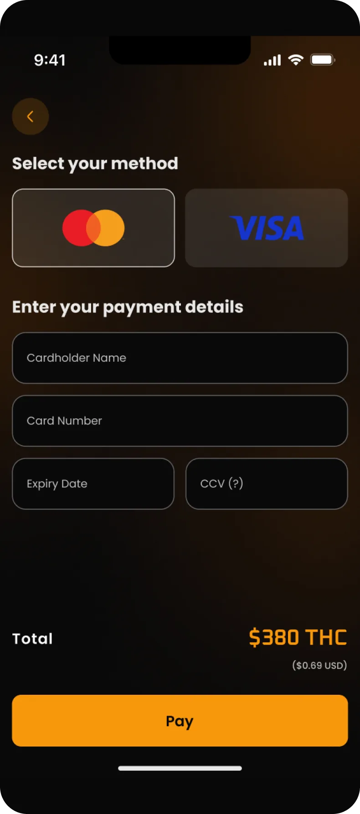
Принцип
Крупное изображение, цена и действие на первом плане. Технические данные ниже, для тех, кому они нужны.
Ключевые действия
- Сделал картинку главным элементом карточки
- Разделил базовую информацию и технические детали
- Использовал тот же паттерн оплаты, что и для токенов
13 · Ключевое решение 8 / 8
Покупка, обмен и получение: простые операции с токенами
ЗАДАЧА
Сделать покупку и обмен токенов такими же простыми, как оплата в обычном приложении, и не скрывать комиссии.
РЕШЕНИЕ
Крупный ввод суммы с цифровой клавиатурой, выбор способа оплаты (Apple Pay, Google Pay, карта, кошелёк), экран успеха с деталями. Обмен показывает ожидаемый результат, влияние на цену и комиссии. Получение - QR-код и адрес.
ДЕТАЛИ
Каждая операция заканчивается экраном-подтверждением с деталями транзакции и кнопкой возврата на главный экран.
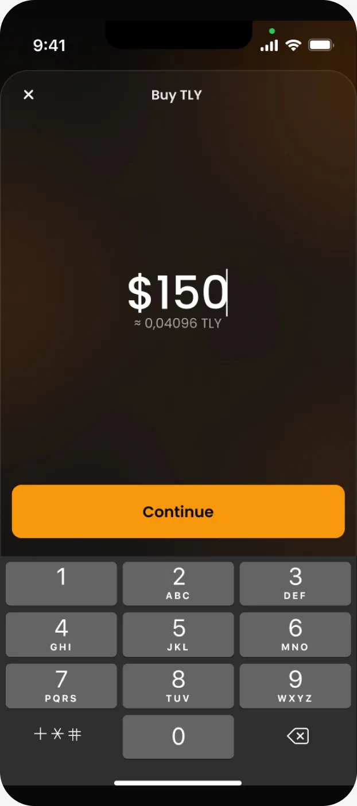
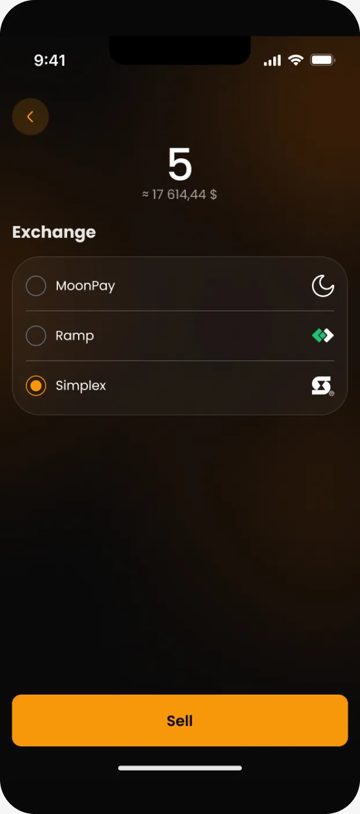
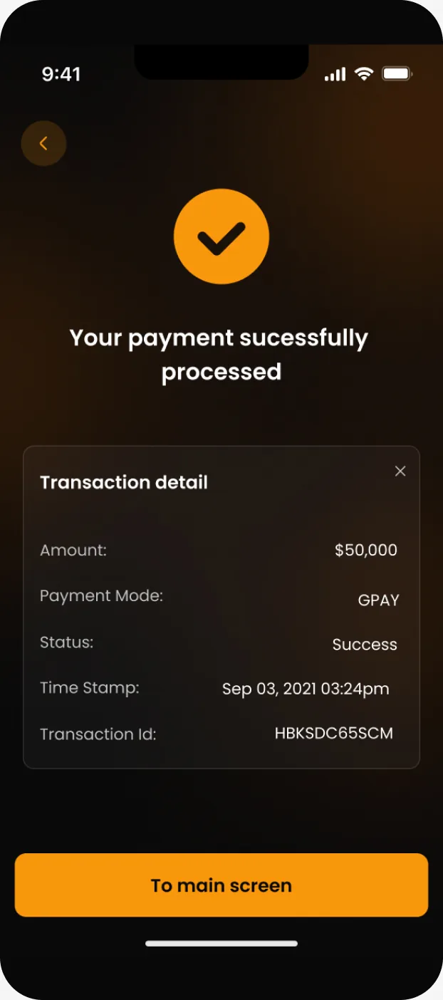
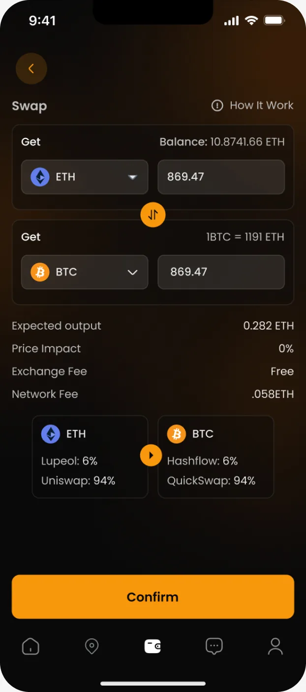
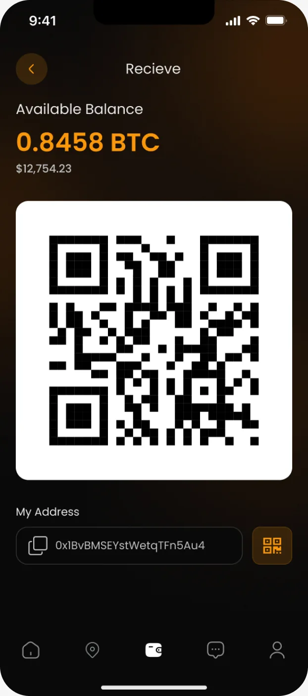
Ключевые действия
- Сделал сумму самым крупным элементом экрана
- Показал комиссии и условия обмена до подтверждения
- Сохранил единый паттерн «ввод → подтверждение → результат» во всех операциях
14 · Визуальный язык
Тёмный интерфейс и один акцентный цвет
Чёрный фон и оранжевый акцент для социальной части, тёплый градиент для кошелька, зелёный только для успешных состояний.
Цвет
Типографика
Poppins для заголовков и SF Pro Text для интерфейса. Крупные цифры балансов и сумм задают иерархию финансовых экранов.
Социальный режим
Чёрный фон, белые заголовки, оранжевый акцент для главных действий. Контент и лица людей на первом плане.
Финансовый режим
Тёплый коричнево-оранжевый градиент, крупные суммы и жёлто-оранжевые кнопки. Пользователь сразу видит, что речь о деньгах.
15 · Бизнес-модель
Шесть источников дохода и токен внутри
Дизайн продукта строился вместе с бизнес-моделью: каждый источник дохода имеет свой экран или сценарий.
Продажа токена
Доступность на централизованных и децентрализованных биржах
Микротранзакции
Виртуальные подарки, товары и контент внутри приложения
Платные подписки
Дополнительные функции, эксклюзивный контент, отсутствие рекламы
Комиссии
Процент с операций покупки и продажи криптовалюты и с платных событий
Реклама
Таргетированная реклама в лентах и профилях
Продажа NFT
Создание и продажа уникальных цифровых активов
Токен Tietly Coin
Криптовалюта, которая используется во всех финансовых операциях платформы. Система наград за привлечение новых пользователей и новые возможности инвестиций для бизнеса и частных инвесторов.
Финансовая модель в питче
Прогноз пользователей, подписок и выручки на 12 месяцев в трёх сценариях (пессимистичном, реалистичном и оптимистичном) и структура ежемесячных расходов.
16 · Статус и планы
Что реализовано и что дальше
Реализовано
- Регистрация и профили с фото и личной информацией
- Подписки и взаимодействия: посты и комментарии
В разработке
- Дополненная реальность: виртуальная примерка и аватары
- Оптимизация мобильного приложения
- AI-модерация контента на основе машинного обучения
Видение
Платформа следующего поколения, где пользователи не только общаются, но и зарабатывают и управляют цифровыми активами.
Роадмап 2025
Q1
- Завершение базового функционала платформы
- Интеграция криптокошелька
- Открытие компании в ОАЭ
- Маркетинговые стратегии: блогеры и SMM
Q2
- Запуск криптовалюты Tietly
- AI-модерация контента
Q3
- Масштабирование платформы и привлечение пользователей таргетированными кампаниями
Q4
- Расширение функционала: дополненная реальность и аватары
17 · Итог
Что получилось
Продукт
Единое приложение, в котором социальная жизнь и крипто-кошелёк работают как один продукт: от знакомства на событии до первой транзакции.
Дизайн-работа
Более 100 экранов: онбординг, лента, карта событий, события, чаты, кошелёк, NFT, операции с токенами и партнёрская программа.
Вывод
Социальные и финансовые сценарии стоит отделять визуально, но связывать общей навигацией и единым профилем: так пользователь не теряется в сложном продукте.
Другие проекты
Можете ознакомиться с моими другими проектами
Блок для связи.
Поработаем вместе?
Напишите мне в телеграм
- Email:
- mountdsgn@mail.ru
- Phone
- +7 (918) 321-26-35